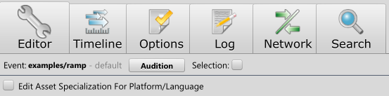
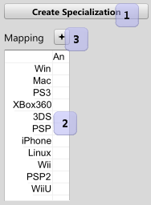

|
Asset Reference |
| Related: | Text | Navigation |
Assets represent everything in sound banks. Events, Presets, Environments, and Sounds are all assets.
The most important thing to know about assets is they can be specialized to be completely different for different platforms or languages.

Clicking the check box will open up the specialization grid.

To add a specialization, use the button to create a new named specialization, then click in the grid wherever the new asset should be used and select it from the drop down. You can click on the platform name or the language name to set the specialization for the entire row or column.
To edit the specialized asset, select it in the named specialization grid and edit it as you would normally.
 Settings Settings |
 Miles Studio Reference Miles Studio Reference |
 Label Queries Label Queries |

|
Miles Sound System 9.3b
E-mail miles3@radgametools.com for technical support. Copyright © 1991-2012 by RAD Game Tools, Inc. All Rights Reserved. |

|